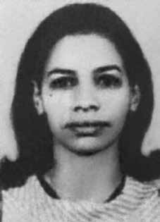

Lucia
Maria
de Souza
CIRCUNSTÂNCIAS DA MORTE
O Relatório Arroyo descreve o episódio que teria resultado na morte de Lucia, em 24 de outubro de 1973: No dia 24, Sônia e Manuel (Rodolfo de Carvalho Troiano) foram ao encontro dos dois que haviam levado o rapazinho. Não encontraram. À tarde, novamente Sonia e Wilson (elemento de massa) voltaram ao local de encontro. Recomendou-se que não fossem por um piseiro antigo, pois ali poderia haver soldados emboscados. Acontece que Sônia acabou indo pelo piseiro e, como decidisse caminhar descalça, deixou a botina no caminho. Quando voltou, não encontrou a botina. Pensou que fosse brincadeira de gente de massa. Chamou por um nome conhecido. Apareceu uma patrulha do Exército que atirou nela, ficando ferida. Os soldados, – segundo relatou gente de massa -, perguntaram-lhe o nome. E ela respondeu que era guerrilheira que lutava pela liberdade. Então, o que comandava a patrulha, respondeu: „Tu queres liberdade. Então, toma…‟ – desfechou vários tiros e a matou. Nesse sentido, o relatório do Ministério da Marinha para o Ministro da Justiça de 1993 registra a morte da guerrilheira em 24 de outubro de 1973. O relatório do Ministério do Exército, entregue na mesma ocasião, confirma a data citada, mas acrescenta que Lucia foi morta “em confronto com as forças de segurança ocorrido entre Xambioá e Marabá”. iv Já o relatório do CIE, Ministério do Exército, assenta sua morte em 25 de outubro de 1973. v O diário de Maurício Grabois também descreve o evento que resultou na morte de Lucia da seguinte forma: A co Sonia, bula do D, quando atendia a um ponto com 2 combatentes, foi surpreendida pelo inimigo e metralhada. Isso aconteceu porque ela desobedeceu às normas de marcha e às diretrizes que recebeu. Tinha ordens para seguir determinada rota, mas resolveu ir por uma “batida”, verdadeiro caminho. Os milicos estavam na área e buscavam rastros dos guerrilheiros. Aquela co resolveu tomar banho e deixou suas botinas no trilheiro, a uma distância não muito longe do ponto. Como os dois co não chegaram na hora combinada, ela regressou despreocupada, acompanhada de um jovem que há pouco ingressara na guerrilha. Não encontrou as botinas. O jovem alertou-a sobre o inimigo, mas ela insistiu em procurá-las. Então se ouviu a intimação dos soldados: “se correr morre”. Seu acompanhante fugiu em desabalada carreira. Ouviram-se rajadas de metralhadora e de FAL. Sonia tombou gritando. (…) Esta morte é uma grande perda para o DA, pois aquela guerrilheira era a melhor bula das FF GG e desfrutava de grande prestígio de massas. Seu desaparecimento terá repercussão negativa entre a população da área do D. O livro Dossiê ditadura cita depoimentos de moradores da região concedidos ao Ministério Público Federal, em 2001, que se pronunciam acerca do paradeiro de Lucia. Entre eles, o de Margarida Ferreira Félix, que afirma o seguinte: que no dia 17 de outubro a depoente ouviu uma rajada de metralhadora às 17:00hs próxima à sua casa no Sítio Água Boa, e a rajada vinha da Grota da Borracheira; que no dia seguinte o Exército cercou a casa da declarante e a entrevistaram para saber se a declarante conhecia a Sônia, e a declarante disse que sim, descrevendo-a fisicamente e sua vestimenta; que os soldados do Exército disseram que a ”Sônia já era”, e que as rajadas que a declarante ouvira no dia anterior foram dadas nela; que os soldados descreveram como a Sônia foi morta: que os soldados emboscaram a Sônia na Grota da Borracheira, através de um camponês que foi capturado, e que iria se encontrar com ela; que quando ela foi abordada, ela conseguiu dar dois tiros, atingindo o Sr. Curió no rosto e num outro doutor; que em seguida ela foi metralhada apenas nas pernas, mas continuou viva; que então, embora muito ferida, ela foi interrogada, mas pouco disse, a não ser sorrir, tendo sido morta pelos soldados; que o corpo da Sônia não foi enterrado, sendo deixado no local, e o irmão da depoente, João dos Reis Nonato da Silva, viu os restos da Sônia, meses após o ocorrido, no local onde foi morta. O mesmo livro cita, ainda, outro depoimento concedido ao MPF, por José Rufino Pinheiro, afirmando o seguinte: […] que o declarante ficou por 6 meses e 16 dias ajudando o Exército na mata, guiandoos; que o batalhão que o declarante servia de guia era composto de 32 soldados; que nessa condição testemunhou a morte de Sônia e Osvaldão; que a morte de Sônia ocorreu perto da casa do finado Hilário, sogro do Peixinho, por volta de dez horas; que Sônia foi alvejada quando ia saindo da mata para a casa, sendo que, quando o declarante a viu, ela só mexia a cabeça; que não sabe qual o destino dado ao corpo de Sônia, pois seguiu em frente com o batalhão. Por outro lado, um morador da região denominado Sinvaldo indica que os fatos teriam se desenrolado em outra localidade. Ele relata ter ouvido do menino que acompanhava Sônia no dia do evento que eles estariam na Grota Fria e que o corpo da guerrilheira havia sido abandonado neste local. Em depoimento prestado à Comissão Nacional da Verdade (CNV), o sargento Santa Cruz afirma que não presenciou, mas tomou conhecimento do evento que resultou na morte de Lucia: O que eu sei da história, porque o próprio cara me falou, não sei se ainda é vivo, que a equipe do Curió era sempre ele o Lacir e o Cid, era a equipe dele, porque ele só andava com esses caras, entendeu? Então quando eles saíram nessa missão segundo o Lacir me falou, quando eles iam descendo que chegaram numa grota está a Sonia bebendo água com um menino, certo? Que quando o Curió a mandou levantar a mão, aí ela quando levantou a mão já foi com o revólver na mão e atirou, ela era boa de tiro, viu? Aí acertou no Asdrúbal e acertou no Curió, entendeu? Aí o Cid a metralhou, entendeu? Porque ele estava com a metralhadora e metralhou ela e o menino conseguiu fugir. vi O relatório da CEMDP menciona que: Em entrevista à revista Isto É (4/9/1985), o então major Sebastião Rodrigues de Moura, o Curió, – atualmente coronel da reserva e um dos primeiros oficiais do CIE enviado para o Araguaia – revelou que Lucia foi ferida, caiu e sacou um revólver escondido na bota, ferindo-o no braço e a um capitão do CIE, Lício Augusto Ribeiro Maciel no rosto. Em entrevista ao site Ternuma, Lício Augusto Ribeiro Maciel informou que estava seguindo o grupo de Sônia e que a guerrilheira teria sido alvejada após resistir à ordem de prisão. Lício afirma que, ao aproximar-se de Lucia, foi atingido por disparos dela e, em ato contínuo, os demais militares atiraram na guerrilheira, matando-a. Este relato é corroborado no livro de Luiz Maklouff, “O coronel rompe o silêncio”, em que o militar identifica também como participantes da operação: Sebastião Moura, Cid – codinome de José Conegundes do Nascimento, e J. Peter – codinome de João Pedro do Rego.
The Arroyo Report describes the episode that would have resulted in Lucia's death, on October 24, 1973: On the 24th, Sônia and Manuel (Rodolfo de Carvalho Troiano) went to meet the two who had taken the little boy. They didn't find it. In the afternoon, Sonia and Wilson (mass element) returned to the meeting place. It was recommended that they not go through an old pieiro, as there could be soldiers ambushed there. It turns out that Sônia ended up going through the floor and, as she decided to walk barefoot, she left her boots along the way. When he returned, he didn't find the boot. He thought it was a common people joke. He called a familiar name. An Army patrol appeared and shot her, leaving her injured. The soldiers, – according to people from the crowd – asked him his name. And she replied that she was a guerrilla fighter who fought for freedom. Then, the one who commanded the patrol, replied: 'You want freedom. So, take...' – he fired several shots and killed her. In this sense, the report from the Ministry of the Navy to the Minister of Justice in 1993 records the guerrilla's death on October 24, 1973. The report from the Ministry of the Army, delivered on the same occasion, confirms the date cited, but adds that Lucia was killed “in a confrontation with the security forces that took place between Xambioá and Marabá.” iv The report from the CIE, Ministry of the Army, places her death on October 25, 1973. v Maurício Grabois's diary also describes the event that resulted in Lucia's death as follows: Co Sonia, D's bula, when attending a point with 2 combatants, was surprised by the enemy and machine-gunned. This happened because she disobeyed the rules of march and the guidelines she received. She had orders to follow certain The soldiers were in the area and were looking for traces of the guerrillas. The girl decided to take a shower and left her boots at the trailhead, not far from the point. The young man warned her about the enemy, but she insisted on looking for them. summons from the soldiers: “If you run, you will die.” Her companion fled in a rush. Machine gun fire and FAL were heard. Sonia fell screaming (…) This death is a great loss for the DA, as that guerrilla was the best leader of the FF GG and enjoyed great prestige among the masses. to the Federal Public Ministry, in 2001, who commented on Lucia's whereabouts. Among them, that of Margarida Ferreira Félix, who states the following: that on October 17th, the deponent heard a machine gun burst at 5:00 pm near her house in Sítio Água Boa, and the blast came from Grota da Borracheira; to know if the declarant knew Sônia, and the declarant said yes, describing her physically and her clothing; that the Army soldiers said that “Sônia already was”, and that the blasts that the declarant had heard the day before were given to her; that the soldiers described how Sônia was killed: that the soldiers ambushed Sônia in Grota da Borracheira, through a peasant who was captured, and that when she was approached, she managed to meet her; giving two shots, hitting Mr. Curió in the face and another doctor; that she was then machine-gunned only in the legs, but remained alive; that, although very injured, she was interrogated, but said little, other than smiling, having been killed by the soldiers; that Sônia's body was not buried, being left in place, and the deponent's brother, João dos Reis Nonato da Silva, saw Sônia's remains, months after the event, in the place where she was killed. The same book also cites another statement given to the MPF, by José Rufino Pinheiro, stating the following: […] that the declarant spent 6 months and 16 days helping the Army in the forest, guiding them; that the battalion that the declarant served as guide was made up of 32 soldiers; who in this condition witnessed the death of Sônia and Osvaldão; that Sônia's death occurred near the house of the late Hilário, Peixinho's father-in-law, around ten o'clock; that Sônia was shot when she was leaving the forest for her house, and when the declarant saw her, she only moved her head; who does not know the fate given to Sônia's body, as he continued on with the battalion. On the other hand, a resident of the region named Sinvaldo indicates that the events would have unfolded in another location. He reports having heard from the boy who accompanied Sônia on the day of the event that they would be in Grota Fria and that the guerrilla's body had been abandoned there. In a statement given to the National Truth Commission (CNV), Sergeant Santa Cruz states that he did not witness, but was aware of the event that resulted in Lucia's death: What I know about the story, because the guy himself told me, I don't know if he is still alive, that Curió's team was always Lacir and Cid, it was his team, because he only hung out with these guys, understand? So when they went on this mission, according to what Lacir told me, when they were going down they arrived at a cave where Sonia was drinking water with a boy, right? That when Bullfinch told her to raise her hand, when she raised her hand, she already had the revolver in her hand and shot, she was a good shot, you know? Then he hit Asdrúbal and hit Curió, understand? Then Cid machine-gunned her, understand? Because he had the machine gun and shot her and the boy managed to escape. vi The CEMDP report mentions that: In an interview with Isto É magazine (4/9/1985), the then major Sebastião Rodrigues de Moura, Curió, – currently a reserve colonel and one of the first CIE officers sent to Araguaia – revealed that Lucia was injured, fell and pulled out a revolver hidden in her boot, wounding him in the arm and a CIE captain, Lício Augusto Ribeiro Maciel, in the face. In an interview with the Ternuma website, Lício Augusto Ribeiro Maciel reported that he was following Sônia's group and that the guerrilla had been shot after resisting the arrest order. Lício states that, as he approached Lucia, he was hit by her shots and, immediately, the other soldiers shot the guerrilla, killing her. This report is corroborated in Luiz Maklouff's book, “O colonel Rompere o Silência”, in which the soldier also identifies as participants in the operation: Sebastião Moura, Cid – codename for José Conegundes do Nascimento, and J. Peter – codename for João Pedro do Rego.
El Informe Arroyo describe el episodio que habría resultado en la muerte de Lucía, el 24 de octubre de 1973: El día 24, Sônia y Manuel (Rodolfo de Carvalho Troiano) fueron a encontrarse con los dos que se habían llevado al pequeño. No lo encontraron. Por la tarde, Sonia y Wilson (elemento de masas) regresaron al lugar de reunión. Se recomendó que no pasaran por un antiguo pieiro, ya que allí podría haber soldados emboscados. Resulta que Sônia acabó atravesando el suelo y, como decidió caminar descalza, dejó sus botas en el camino. Cuando regresó, no encontró el maletero. Pensó que era una broma de gente común. Llamó un nombre familiar. Una patrulla del Ejército apareció y le disparó, dejándola herida. Los soldados, según gente de la multitud, le preguntaron su nombre. Y ella respondió que era una guerrillera que luchaba por la libertad. Entonces, el que comandaba la patrulla, respondió: 'Ustedes quieren libertad. Entonces, toma...' – disparó varios tiros y la mató. En este sentido, el informe del Ministerio de Marina al Ministro de Justicia de 1993 registra la muerte del guerrillero el 24 de octubre de 1973. El informe del Ministerio del Ejército, entregado en la misma ocasión, confirma la fecha citada, pero agrega que Lucía fue asesinada “en un enfrentamiento con las fuerzas de seguridad que tuvo lugar entre Xambioá y Marabá”. iv El informe de la CIE, Ministerio del Ejército, sitúa su muerte el 25 de octubre de 1973. v El diario de Maurício Grabois también describe el suceso que resultó en la muerte de Lucía de la siguiente manera: Co Sonia, bula de D, cuando asistía a un punto con 2 combatientes, fue sorprendida por el enemigo y ametrallada. Esto sucedió porque desobedeció las reglas de marcha y las directrices que recibió. Tenía órdenes de seguir ciertas cosas. Los soldados estaban en la zona y buscaban rastros de los guerrilleros. La niña decidió darse una ducha y dejó sus botas en el comienzo del sendero, no lejos del punto. El joven le advirtió sobre el enemigo, pero ella insistió en buscarlos. citación de los soldados: “Si corres, morirás”. Su acompañante huyó a toda prisa. Se escucharon disparos de ametralladora y FAL. Sonia cayó gritando (…) Esta muerte es una gran pérdida para la DA, pues esa guerrilla era la mejor dirigente de las FF GG y gozaba de gran prestigio entre las masas. al Ministerio Público Federal, en 2001, quien comentó sobre el paradero de Lucía. Entre ellos, el de Margarida Ferreira Félix, quien afirma lo siguiente: que el 17 de octubre, la declarante escuchó el estallido de una ametralladora a las 5:00 pm cerca de su casa en Sítio Água Boa, y el estallido provino de Grota da Borracheira; saber si el declarante conocía a Sônia, y el declarante dijo que sí, describiéndola físicamente y su vestimenta; que los soldados del Ejército dijeron que “Sônia ya estaba”, y que las explosiones que la declarante había escuchado el día anterior se las dieron a ella; que los soldados describieron cómo mataron a Sônia: que los soldados tendieron una emboscada a Sônia en Grota da Borracheira, a través de un campesino que fue capturado, y que cuando se acercaron a ella, logró encontrarse con ella; dándole dos tiros, golpeando en la cara al señor Curió y a otro médico; que luego fue ametrallada sólo en las piernas, pero permaneció con vida; que, aunque muy herida, fue interrogada, pero dijo poco, aparte de sonreír, habiendo sido asesinada por los soldados; que el cuerpo de Sônia no fue enterrado, quedando en el lugar, y que el hermano del declarante, João dos Reis Nonato da Silva, vio los restos de Sônia, meses después del hecho, en el lugar donde fue asesinada. El mismo libro cita también otra declaración dada al MPF, por José Rufino Pinheiro, en la que expresa lo siguiente: […] que el declarante estuvo 6 meses y 16 días ayudando al Ejército en la selva, guiándolos; que el batallón que sirvió de guía el declarante estaba integrado por 32 soldados; quien en esa condición presenció la muerte de Sônia y Osvaldão; que la muerte de Sônia ocurrió cerca de la casa del difunto Hilário, suegro de Peixinho, alrededor de las diez de la mañana; que Sônia fue baleada cuando salía del bosque rumbo a su casa, y cuando el declarante la vio, ella sólo movió la cabeza; quien desconoce el destino corrido por el cuerpo de Sônia, que continuó con el batallón. Por otro lado, un habitante de la región de nombre Sinvaldo indica que los hechos se habrían desarrollado en otra localidad. Refiere haber escuchado por parte del niño que acompañaba a Sônia el día del hecho, que estarían en Grota Fria y que el cuerpo del guerrillero había sido abandonado allí. En declaración dada a la Comisión Nacional de la Verdad (CNV), el sargento Santa Cruz afirma que no presenció, pero tuvo conocimiento del hecho que resultó en la muerte de Lucía: Lo que sé de la historia, porque el mismo tipo me dijo, no sé si sigue vivo, que el equipo de Curió siempre fue Lacir y el Cid, era su equipo, porque solo andaba con estos tipos, ¿entiendes? Entonces cuando fueron a esta misión, según me dijo Lacir, al bajar llegaron a una cueva donde Sonia estaba tomando agua con un niño, ¿no? Que cuando Bullfinch le dijo que levantara la mano, cuando ella levantó la mano, ya tenía el revólver en la mano y disparó, era buena tiradora, ¿sabes? Luego le pegó a Asdrúbal y le pegó a Curió, ¿entiendes? Entonces el Cid la ametralló, ¿entiendes? Porque él tenía la ametralladora y le disparó y el niño logró escapar. vi El informe del CEMDP menciona que: En entrevista con la revista Isto É (9/4/1985), el entonces mayor Sebastião Rodrigues de Moura, Curió, – actualmente coronel de reserva y uno de los primeros oficiales del CIE enviados a Araguaia – reveló que Lucía estaba herida, cayó y sacó un revólver escondido en su bota, hiriéndolo a él en el brazo y al capitán del CIE, Lício Augusto Ribeiro Maciel, en la cara. En entrevista con el sitio web Ternuma, Lício Augusto Ribeiro Maciel informó que seguía al grupo de Sônia y que la guerrillera había sido baleada tras resistirse a la orden de detención. Lício afirma que, al acercarse a Lucía, fue alcanzado por sus disparos e, inmediatamente, los demás militares dispararon contra la guerrillera, matándola. Este relato es corroborado en el libro de Luiz Maklouff, “O coronel Rompere o Silência”, en el que el soldado también identifica como participantes de la operación a: Sebastião Moura, Cid – nombre en clave de José Conegundes do Nascimento, y J. Peter – nombre en clave de João Pedro do Rego.